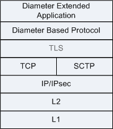
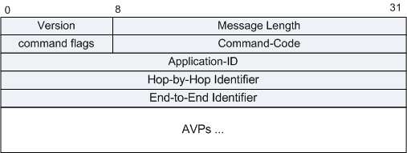
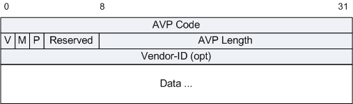
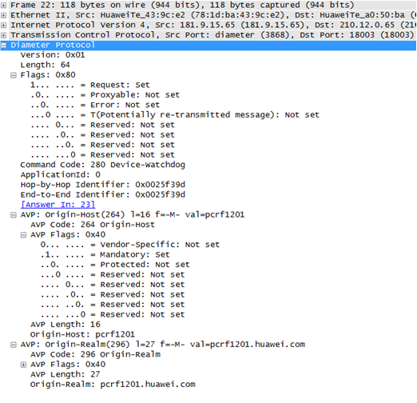
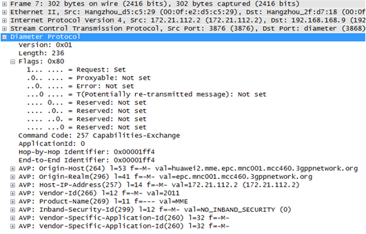

Diameter协议是IETF的AAA工作组作为下一代的AAA协议标准，由RADIUS协议演进而来。
Diameter目前主要应用于移动通信系统，固网接入主要使用RFC2865的Radius协议。随着固网与无线网络融合，统一认证计费授权服务器的趋势越来越迫切，固网接入支持Diameter协议栈已成为普遍需求。
报文格式
图1 Diameter协议栈结构

图2 Diameter报文格式

| 字段 |
长度 |
含义 |
| Version |
1字节 |
必须置为1，表示Diameter协议版本号为1。 |
| Message Length |
3字节 |
表示Ditameter消息长度，包括Diameter的头部域。 |
| Command Flags |
1字节 |
此字段格式如下： 0 1 2 3 4 5 6 7
+-+-+-+-+-+-+-+-+
|R P E T r r r r|
+-+-+-+-+-+-+-+-+
- R(equest) - 如果置1，表示消息为请求消息，如果置0，表示消息为应答消息。
- P(roxiable) - 如果置1，表示消息可能被代理、中继或重定向。如果置0，表示消息必须本地处理。
- E(rror) - 如果置1，表示消息包含协议错误，不符合ABNF的定义。带有E比特置位的通常表示错误消息。在请求消息中该比特不应该置位。
- T(Potentially re-transmitted message) - 当发送的请求还没得到确认时，此标记置位，表示可能因为链路故障导致消息的重复。
第1次发送的请求消息中此标记必须置0。应答消息中此标记也应该置0。
- r(eserved) - 预留将来使用，必须设置为0，接收时忽略。
|
| Command-Code |
3字节 |
命令代码，代码值由IANA分配，其中0xFFFFFE -0xFFFFFF预留给实验用。- Abort-Session-Request (ASR): 274
- Abort-Session-Answer (ASA): 274
- Accounting-Request (ACR): 271
- Accounting-Answer (ACA): 271
- Capabilities-Exchange-Request (CER): 257
- Capabilities-Exchange-Answer (CEA): 257
- Device-Watchdog-Request (DWR): 280
- Device-Watchdog-Answer (DWA): 280
- Disconnect-Peer-Request (DPR): 282
- Disconnect-Peer-Answer (DPA): 282
- Re-Auth-Request (RAR): 258
- Re-Auth-Answer (RAA): 258
- Session-Termination-Request (STR): 275
- Session-Termination-Answer (STA): 275
|
| Application-ID |
4字节 |
用来标记消息的应用，该应用可能是认证、计费或者厂家特殊应用。 |
| Hop-by-Hop Identifier |
4字节 |
逐跳标记，用来匹配请求和应答，通常是一个自动增加的编号，从一个随机的数开始增加。应答消息里的此字段如果无法识别，消息将被丢弃。 |
| End-to-End Identifier |
4字节 |
用于检测重复消息。 |
| AVPs |
变长 |
Diameter消息使用AVP来封装信息。 |
图3 AVP消息格式

| 字段 |
长度 |
含义 |
| AVP Code |
4 bytes |
AVP Code字段和Vendor-Id字段一起唯一标识了一个属性。1 – 255 预留用于和RADIUS后向兼容，不需要携带Vendor-Id字段。256及以上的值用于Diameter协议，由IANA分配。 |
| V |
1 bit |
V（Vendor-Specific bit）位用来标识AVP头部是否必须携带Vendor-ID字段。 |
| M |
1 bit |
M（Mandatory）位用来标识此AVP是否必须携带。 |
| P |
1 bit |
P位用来标识是否需要加密。 |
| Reserved |
5 bits |
保留位。 |
| AVP Length |
3 bytes |
表示AVP的字节数，包括AVP Code、AVP Length、AVP Flags、Vendor-ID、AVP data字段。 |
| Vendor-ID |
4 bytes |
IANA分配的厂家标识。如果V比特置位，AVP必须携带Vendor-ID字段。 |
| Data |
Variable |
包括0个或多个属性。 |
报文示例
图4 Diameter报文（使用TCP封装）

图5 Diameter报文（使用SCTP封装）

参考标准
| 标准 |
描述 |
| RFC 3588 |
Diameter Base Protocol |